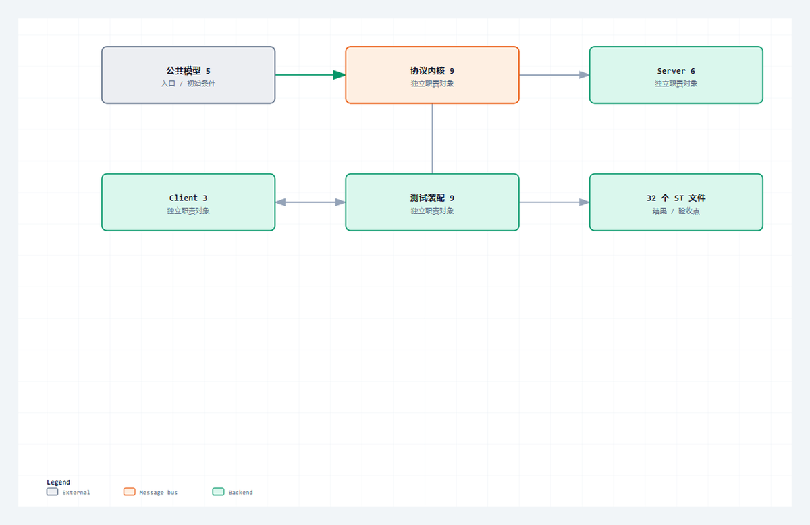

用一张完整索引收束 28 篇文章、32 个 ST 文件、离线测试和真机测试，明确当前版本能做什么、不能做什么以及怎样复现。
适合谁收藏
- 需要按证据链完成 HTTP 现场排障的工程师。
- 需要复核 32 个源码文件覆盖范围的人。
- 准备把整套 HTTP 工程迁移到目标运行时并重新验收的读者。
综合收束，第 2/2 篇；主系列第 28/28 篇。
现场问题
完整开源不只是把代码贴完。读者还需要知道先看哪些类型、怎样装配 Server 和 Client、离线测试证明什么、真机测试还要补哪些证据。
这一篇不再增加新概念，而是把文章、对象、验证和边界对齐，确保任何一个公开结论都能回到源码或测试路径。
先给结论
本系列交付 28 篇文章并完整公开 32 个 ST 文件。阅读顺序是公共模型、协议内核、Server、Client、离线测试、真机装配；使用时仍需根据目标运行时和现场网络重新完成编译与真机验证。

读图重点
这张图只压缩本篇的判断路径。读图时先找“公共模型”对应的输入边界，再沿着“9 个文件”检查状态怎样推进，最后用“离线断言、127 项测试、真机入口和 PLC_PRG”确认输出是否已经形成验收证据。
把对象和边界分开
| 对象或阶段 | 工程职责 | 现场观察点 |
|---|---|---|
| 公共模型 | 5 个文件 | 常量、枚举、请求响应结构 |
| 协议内核 | 9 个文件 | Parser、Builder、Header、长度、chunked |
| Server | 6 个文件 | 监听、连接槽、状态、指标和快照 |
| Client | 3 个文件 | 主动请求状态机和指标 |
| 测试与装配 | 9 个文件 | 离线断言、127 项测试、真机入口和 PLC_PRG |
32 个文件的阅读顺序
| 顺序 | 对象组 | 对应源码篇 | 阅读目的 |
|---|---|---|---|
| 1 | 错误、方法、GVL、请求和响应结构 | 19 | 先建立资源与数据边界 |
| 2 | Parser 与 Header/长度函数 | 20 | 看清消息怎样从文本变成结构体 |
| 3 | Builder 与方法/状态文本函数 | 21 | 看清结构体怎样变回合法报文 |
| 4 | chunked 与十六进制长度 | 22 | 单独理解变长 Body 的结束条件 |
| 5 | Server 与连接槽 | 23 | 追监听、接入、读写和清理 |
| 6 | Client | 24 | 追主动事务和异常恢复 |
| 7 | 离线测试 | 25 | 对照 127 项确定性边界 |
| 8 | 真机测试与 PLC_PRG | 26 | 完成工程装配和真实通信 |
按这个顺序阅读，任何一个状态或错误都能向前追到定义，向后追到验证；不需要从最大的功能块第一行开始硬读。
从协议约束到代码职责
协议约束
本系列交付 28 篇文章并完整公开 32 个 ST 文件。阅读顺序是公共模型、协议内核、Server、Client、离线测试、真机装配；使用时仍需根据目标运行时和现场网络重新完成编译与真机验证。 这条结论先限定消息什么时候成立，再限定哪个角色可以消费结果。若绕过协议边界直接驱动业务，半包、超时、重复执行和连接残留就会进入应用层。
工程抽象
当前能力边界是明文 HTTP/1.1、固定资源上限、Content-Length、入站 chunked、短连接和受控顺序 keep-alive。没有实现的 HTTPS、认证、HTTP/2、pipeline 和连接池，不应从本文推断为可用。
源码发布采用单一事实源：32 个文件都直接读取已验证 ST 工程，普通篇只使用连续原文片段，源码篇完整嵌入文件内容。公开稿不包含本机路径、内部仓库名或验证过程文件名。
- 公共模型：工程职责是“5 个文件”。它不能只停留在命名层面，运行时必须能通过“常量、枚举、请求响应结构”观察到输入、状态或结果；否则这一层即使有代码，也没有形成可验证边界。
- 协议内核：工程职责是“9 个文件”。它不能只停留在命名层面，运行时必须能通过“Parser、Builder、Header、长度、chunked”观察到输入、状态或结果；否则这一层即使有代码，也没有形成可验证边界。
- Server：工程职责是“6 个文件”。它不能只停留在命名层面，运行时必须能通过“监听、连接槽、状态、指标和快照”观察到输入、状态或结果；否则这一层即使有代码，也没有形成可验证边界。
- Client：工程职责是“3 个文件”。它不能只停留在命名层面，运行时必须能通过“主动请求状态机和指标”观察到输入、状态或结果；否则这一层即使有代码，也没有形成可验证边界。
- 测试与装配：工程职责是“9 个文件”。它不能只停留在命名层面，运行时必须能通过“离线断言、127 项测试、真机入口和 PLC_PRG”观察到输入、状态或结果；否则这一层即使有代码，也没有形成可验证边界。
程序单元
本篇主证据来自 GVL_Http.st 中以 VAR_GLOBAL CONSTANT 为定位点的连续源码。这里不是为了展示语法，而是把协议约束落到确定程序单元：输入先进入结构体或缓冲区，状态机只在本周期处理可确认的部分，长度和结束条件决定能否前进，错误码与指标负责把失败原因带出对象边界。这样一来，“完整开源需要源码、索引和复现步骤同时存在。”可以在代码、在线变量和外部报文之间逐项对照，而不是依赖经验猜测。
本篇核心源码片段
下面两段代码来自同一个真实文件 GVL_Http.st，以 VAR_GLOBAL CONSTANT 为中心连续截取，没有改写变量、删除分支或用伪代码替代。第一段用于确认入口与前置条件，第二段用于确认状态、边界和输出。核对时重点看“5 个文件”怎样进入对象，以及“离线断言、127 项测试、真机入口和 PLC_PRG”怎样证明本次处理已经结束。若两段之间的连续关系无法解释“后续版本应沿用同一对象和证据体系演进。”，就不能把局部代码截图当成实现证据。
片段一：入口、声明与前置条件
VAR_GLOBAL CONSTANT
cnDefaultServerPort : UINT := 8088; // 全局协议常量。
cnMaxClientSlots : UINT := 4; // 全局协议常量。
cnRxBufferSize : UINT := 4095; // 全局协议常量。
cnTxBufferSize : UINT := 4095; // 全局协议常量。
cnMaxMessageSize : UINT := 4095; // 全局协议常量。
cnMaxHeaderSize : UINT := 2047; // 全局协议常量。
cnMaxBodySize : UINT := 1023; // 全局协议常量。
cnMaxTargetLen : UINT := 255; // 全局协议常量。
cnMaxHostLen : UINT := 128; // 全局协议常量。
cnMaxHeaderValueLen : UINT := 255; // 全局协议常量。这一段先回答对象在什么输入和状态下开始工作。阅读时要核对变量的初值、长度上限和启动条件，不能只看某个布尔量是否变成 TRUE。
片段二：状态推进、边界与输出
cnMaxChunkLineLen : UINT := 32; // 全局协议常量。
cnTcpConnectTimeoutUs : UDINT := 5000000; // 全局协议常量。
cnClientTimeoutMs : UDINT := 8000; // 全局协议常量。
cnServerConnectionMs : UDINT := 8000; // 全局协议常量。
cnWriteTimeout : TIME := T#5S; // 全局协议常量。
cnTcpReadChunkSize : UINT := 240; // NBS 单次 TCP_Read 字节数，避开部分运行时 255 字节边界。
cnTcpWriteChunkSize : UINT := 240; // NBS 单次 TCP_Write 字节数，大响应按 TCP 字节流分批发送。
cnTcpReadMaxErrorCount: UINT := 3; // TCP_Read 连续错误滤波次数，避免大报文半包接收被瞬时读错误误杀。
cnDefaultContentType : STRING(32) := 'text/plain'; // 全局协议常量。
cnDefaultPath : STRING(8) := '/'; // 全局协议常量。
END_VAR第二段继续展示同一连续源码范围。把它与第一段合起来，才能判断输入怎样被锁存、状态何时推进、边界何时满足，以及错误出口是否保留了足够诊断信息。
验证路径
| 场景 | 操作 | 通过口径 |
|---|---|---|
| 源码覆盖 | 32/32 文件各归属一个源码篇 | 无缺失、无重复完整公开 |
| 离线验证 | 127 项核心用例 | Parser、Builder 和 chunked 边界通过 |
| 真机验证 | Server 与 Client 双向事务 | 外部工具和 PLC 在线证据一致 |
| 发布验证 | 双平台标题、正文、封面和顺序一致 | 草稿预览后人工确认 |
场景 1：源码覆盖
先按源码篇 19 到 26 建立文件清单，再用文件名和内容哈希核对 32 个 ST 文件。每个文件必须只完整出现一次，并能回到公共模型、协议内核、Server、Client、测试或装配中的一个确定职责。重复粘贴、遗漏 Method，或者文章中的代码与工程源文件哈希不一致，都表示源码覆盖没有闭环。
场景 2：离线验证
离线入口应从干净汇总状态启动，完整运行 Parser、Builder、Header、Content-Length、chunked 和错误路径用例。验收时读取总数、通过数、失败数、阻塞数和首个失败用例，不能只看一个 bPassed。127 项全部执行且失败、阻塞均为零，才能证明当前纯协议内核在这组确定性边界内通过。
场景 3：真机验证
真机部分分成两个方向：外部客户端访问 PLC Server，PLC Client 再访问外部服务。每个方向都要保留原始报文、状态机终态、错误码、请求/响应计数和连接快照。只有外部工具看到的结果与 PLC 在线变量一致，并且下一笔事务还能从干净状态启动，才算完成双向互通验证。
场景 4：发布验证
发布前按正式原稿文件名逐篇比对 CSDN、公众号和官网标题，正文则检查元数据区、重复一级标题与编辑器专用标记已被清理，图片顺序和哈希与本地一致。封面统一复用 HTTP 系列资产，篇序必须从 01 连续到 28。平台预览和排期回读全部一致后，发布链路才算完成；任一平台缺篇或错序都要阻断本批次。
常见误判
- 把源码完整贴出等同于工程可复现，缺少对象索引、装配顺序和验证范围。
- 把离线 127 项通过外推成所有运行时和网络环境都已经通过。
- 文章版本更新后没有同步源码覆盖表，读者拿到的索引与正文不一致。
这些误判的共同点，是拿一个局部现象替代完整事务。定位时必须回到本篇的输入、状态、边界和输出四个坐标，并用相同输入完成回归。
这一篇你最该记住
- 完整开源需要源码、索引和复现步骤同时存在。
- 测试通过有明确范围，不能替代目标现场验证。
- 后续版本应沿用同一对象和证据体系演进。
系列导航
- 系列：CodeSys HTTP 系列教程，第 28/28 篇。
- 阶段：综合收束，职责线位置 2/2。
- 上一篇：第27篇
- 下一篇：无，这是系列完结篇。
- 发布顺序：基础认知 -> Server -> Client -> 完整源码加更 -> 综合收束。
评论区预留
这里先保留评论和回复结构，不接入第三方服务。后续统一决定登录、匿名、审核、反垃圾和静态站兼容策略。